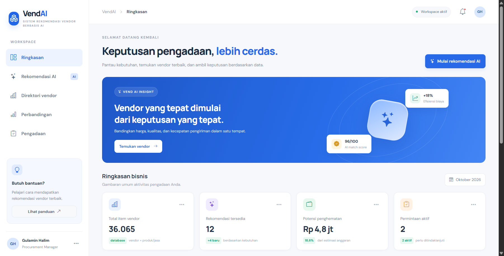
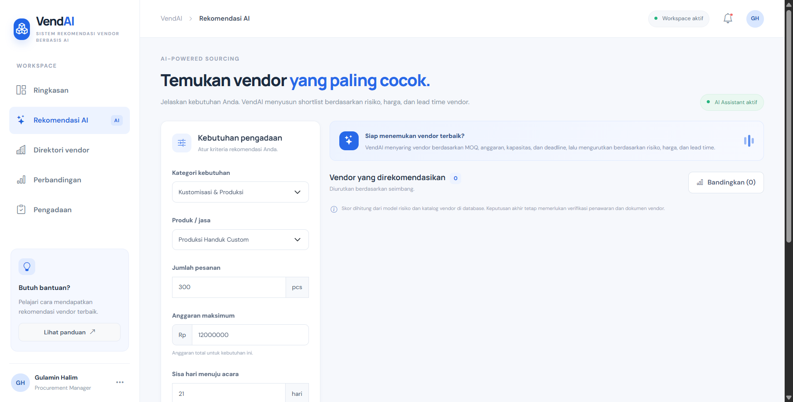
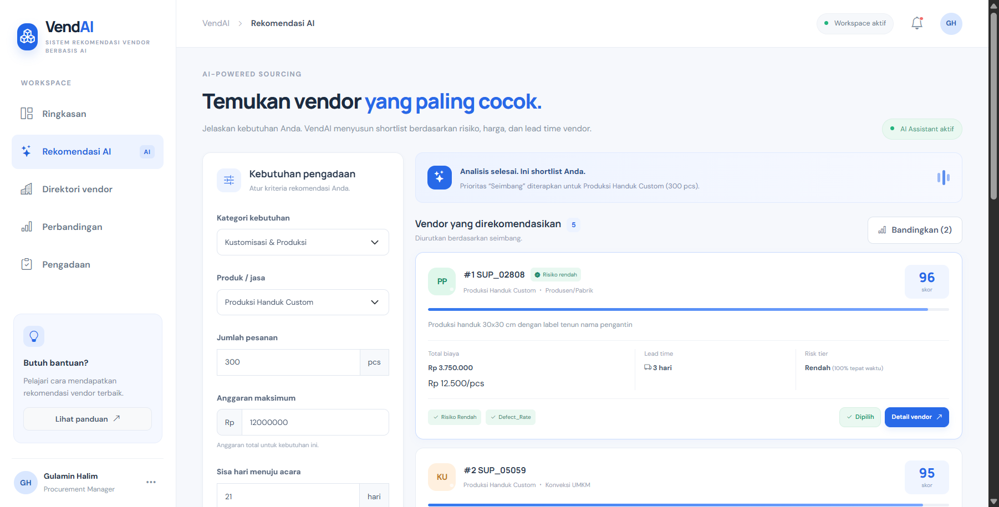
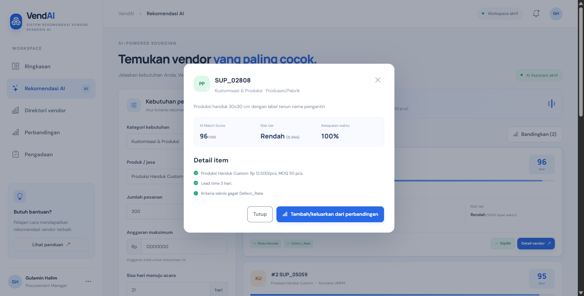
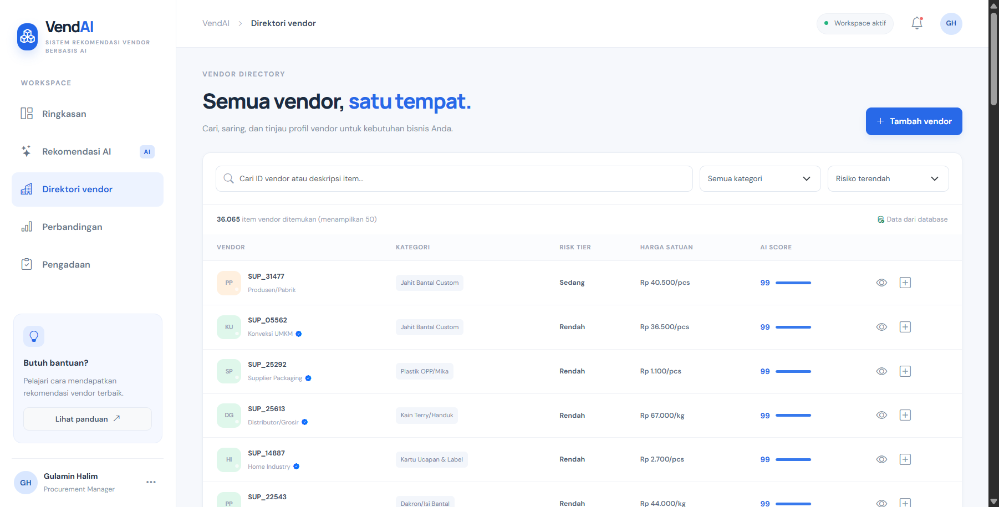
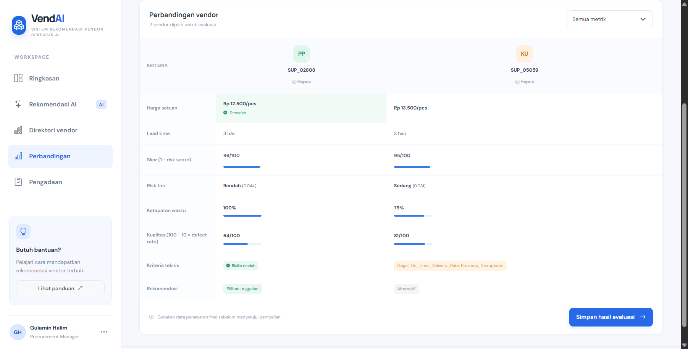
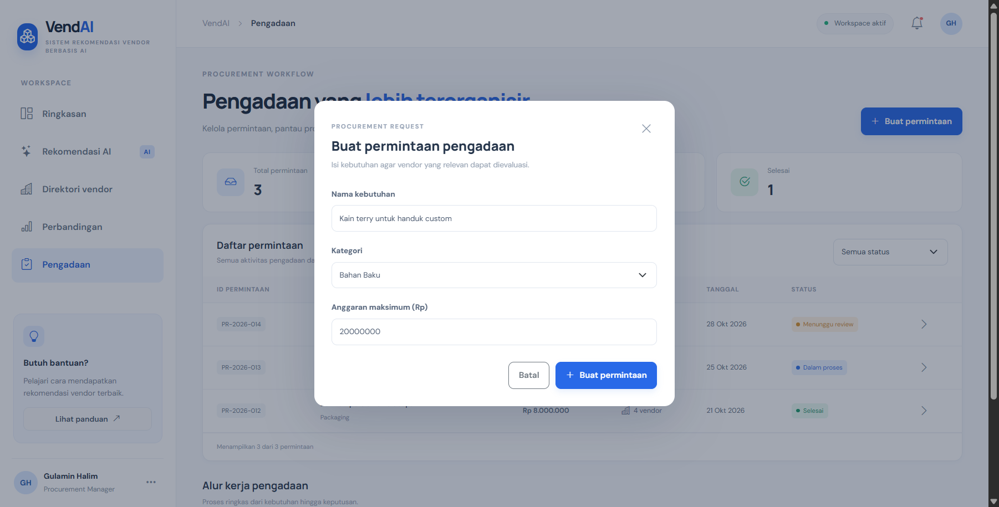

Sistem Rekomendasi Vendor Berbasis Risiko untuk Toko Souvenir & Hampers Pernikahan
Informasi Akses Aplikasi
Alamat aplikasi (lokal)
http://localhost:5173
Username
Tidak diperlukan
Password
Tidak diperlukan
Mode akun
Demo: langsung masuk sebagai profil contoh Gulamin Halim – Procurement Manager
Dokumentasi API (Swagger)
http://127.0.0.1:8000/docs
Daftar isi
Tentang VendAI
Informasi akses
Menjalankan aplikasi
Mengenal tampilan
Halaman Ringkasan
Halaman Rekomendasi AI
Halaman Direktori vendor
Halaman Perbandingan
Halaman Pengadaan
Skenario lengkap: dari kebutuhan sampai permintaan pengadaan
Arti istilah dan skor
Keterbatasan versi saat ini
Troubleshooting
1. Tentang VendAI
VendAI membantu toko souvenir & hampers pernikahan (handuk, sajadah, t-shirt printing, bantal custom) memilih vendor bahan baku, kustomisasi & produksi, dan packaging. Setiap vendor dinilai dari dua sisi:
Faktor operasional: probabilitas risiko dari model machine learning (risk score).
Faktor teknis: aturan bisnis pada ketepatan pengiriman, tingkat cacat produk, lead time, dan riwayat gangguan.
Gabungan keduanya menghasilkan Risk Tier (Rendah / Sedang / Tinggi). Saat Anda mencari rekomendasi, vendor disaring sesuai kebutuhan (kategori, jumlah, anggaran, sisa hari menuju acara) lalu diurutkan berdasarkan skor gabungan risiko, harga, dan lead time.
2. Informasi Akses
Aplikasi tidak memerlukan username maupun password. VendAI berjalan dalam mode demo tanpa halaman login. Setelah aplikasi dijalankan, cukup buka http://localhost:5173 di browser dan Anda langsung masuk ke workspace sebagai profil contoh Gulamin Halim (Procurement Manager).
Frontend (website)
http://localhost:5173
Backend API
http://127.0.0.1:8000
Dokumentasi API interaktif
http://127.0.0.1:8000/docs
Browser yang disarankan
Google Chrome / Microsoft Edge versi terbaru, layar desktop
3. Menjalankan Aplikasi
VendAI dijalankan di komputer lokal. Langkah lengkap ada di README.md; berikut ringkasannya.
Jalankan API (dari root proyek, terminal pertama):
uvicorn app.main:app --reload
# jika perintah uvicorn tidak dikenal, jalankan lewat Python 3.11 Anda:
python -m uvicorn app.main:app --reload
Jalankan frontend (terminal kedua):
npm install
npm run start:dev
Buka http://localhost:5173 di browser.
API dan frontend harus berjalan bersamaan. Frontend mengambil data vendor dari database melalui API; jika API mati, muncul peringatan "Data vendor gagal dimuat".
4. Mengenal Tampilan
Sidebar kiri (Workspace): menu ke lima halaman, yaitu Ringkasan, Rekomendasi AI, Direktori vendor, Perbandingan, dan Pengadaan. Di bagian bawah ada kartu bantuan dan profil pengguna demo.
Topbar: breadcrumb halaman aktif, status Workspace aktif, ikon notifikasi, dan avatar.
Notifikasi kecil (toast) muncul di pojok layar setiap kali sebuah aksi berhasil, misalnya setelah rekomendasi dibuat.
5. Halaman Ringkasan
Halaman pertama yang tampil saat aplikasi dibuka.

Gambar 1. Halaman Ringkasan
Lihat kartu Ringkasan bisnis: total item vendor di database, rekomendasi tersedia, potensi penghematan, dan jumlah permintaan aktif.
Gulir ke bawah untuk melihat Rekomendasi unggulan (3 vendor dengan skor tertinggi) dan Aktivitas pengadaan terbaru.
Klik Mulai rekomendasi AI atau Temukan vendor untuk langsung ke halaman Rekomendasi AI.
6. Halaman Rekomendasi AI
Fitur utama VendAI: menyusun shortlist vendor sesuai kebutuhan pengadaan Anda.
6.1 Mengisi kriteria

Gambar 2. Panel "Kebutuhan pengadaan"
Kategori kebutuhan: pilih Bahan Baku, Kustomisasi & Produksi, atau Packaging.
Produk / jasa: pilih sub-kategori, misalnya Produksi Handuk Custom. Satuan (pcs, kg, meter) menyesuaikan otomatis.
Jumlah pesanan: isi jumlah yang dibutuhkan, misalnya 300.
Anggaran maksimum: total anggaran dalam Rupiah, misalnya 12000000.
Sisa hari menuju acara: misalnya 21. Kosongkan bila tidak ada deadline.
Prioritas utama: pilih salah satu.
Seimbang: urutan default dari skor risiko, harga, dan lead time.
Harga terendah: total biaya paling murah di atas.
Kualitas: tingkat cacat (defect rate) terendah di atas.
Pengiriman tercepat: lead time terpendek di atas.
Klik Generate rekomendasi. Tombol aktif bila produk, jumlah, dan anggaran sudah terisi.
Vendor dengan Risk Tier Tinggi otomatis dikecualikan. Vendor juga disaring berdasarkan MOQ (minimal order), anggaran, kapasitas produksi, dan deadline.
6.2 Membaca hasil rekomendasi

Gambar 3. Shortlist vendor hasil rekomendasi
Setiap kartu vendor menampilkan:
Peringkat dan ID vendor (misalnya #1 SUP_02808), label Risiko rendah bila tier-nya Rendah, sub-kategori, dan jenis vendor.
Skor (0–100) di kanan atas: makin tinggi makin direkomendasikan.
Total biaya untuk jumlah pesanan Anda beserta harga satuan, Lead time, dan Risk tier beserta persentase ketepatan waktu.
Label di bawah kartu: label pertama adalah tier risiko, label berikutnya adalah kriteria teknis yang tidak lolos (misalnya Defect_Rate).
Aksi pada kartu:
Bandingkan: memasukkan vendor ke daftar perbandingan (tombol berubah menjadi Dipilih). Klik lagi untuk mengeluarkan.
Detail vendor: membuka jendela detail.
Bandingkan (n) di atas daftar: membuka halaman Perbandingan.
Jika muncul "Tidak ada vendor yang cocok", naikkan anggaran, kurangi jumlah, atau perpanjang deadline.
6.3 Detail vendor

Gambar 4. Jendela detail vendor
Jendela detail menampilkan AI Match Score, Risk tier beserta nilai risk score, ketepatan waktu, harga satuan, MOQ, lead time, dan kriteria teknis yang gagal. Klik Tambah/keluarkan dari perbandingan untuk mengatur daftar perbandingan, atau Tutup untuk kembali.
7. Halaman Direktori vendor
Berisi seluruh katalog vendor × produk/jasa dari database (36.065 item).

Gambar 5. Direktori vendor
Cari: ketik ID vendor (misalnya SUP_02808) atau kata pada deskripsi item (misalnya handuk) di kolom pencarian.
Filter kategori: pilih Semua kategori, Bahan Baku, Kustomisasi & Produksi, atau Packaging.
Urutkan: Risiko terendah, Harga satuan terendah, atau Lead time tercepat.
Klik ikon mata untuk melihat detail vendor, atau ikon kotak plus untuk memilih vendor ke daftar perbandingan.
Daftar menampilkan 50 item pertama; klik Muat lebih banyak di bawah tabel untuk menambah data.
Tombol Vendor dipilih: n di bawah halaman menunjukkan jumlah vendor yang siap dibandingkan.
8. Halaman Perbandingan
Membandingkan vendor terpilih secara berdampingan. Pilih minimal 2 vendor dari Rekomendasi AI atau Direktori vendor terlebih dahulu.

Gambar 6. Tabel perbandingan vendor
Buka menu Perbandingan. Jika vendor yang dipilih kurang dari 2, klik Buka direktori vendor untuk memilih.
Gunakan dropdown di kanan atas untuk menampilkan Semua metrik, Metrik komersial (harga satuan, lead time), atau Performa vendor (skor, risk tier, ketepatan waktu, kualitas, kriteria teknis).
Sel berwarna hijau bertanda Terendah menunjukkan harga satuan termurah.
Baris Rekomendasi menandai vendor dengan skor tertinggi sebagai Pilihan unggulan; sisanya Alternatif.
Klik Hapus di bawah nama vendor untuk mengeluarkannya dari perbandingan.
Lihat ringkasan Total permintaan, Menunggu / proses, dan Selesai.
Gunakan dropdown status untuk menyaring: Semua status, Menunggu review, Dalam proses, atau Selesai.
Klik tombol panah di ujung baris untuk melihat ringkasan permintaan.
Klik Buat permintaan untuk menambah permintaan baru:

Gambar 8. Form "Buat permintaan pengadaan"
Isi Nama kebutuhan, pilih Kategori, dan isi Anggaran maksimum (Rp).
Klik Buat permintaan. Permintaan baru muncul paling atas dengan status Menunggu review.
10. Skenario Lengkap
Kasus: toko membutuhkan 300 pcs handuk custom untuk acara pernikahan 21 hari lagi, dengan anggaran maksimum Rp12.000.000.
Buka http://localhost:5173 (tanpa login), lalu klik Mulai rekomendasi AI di halaman Ringkasan.
Isi kriteria: Kategori Kustomisasi & Produksi, Produk Produksi Handuk Custom, Jumlah 300, Anggaran 12000000, Sisa hari 21, Prioritas Seimbang.
Klik Generate rekomendasi. VendAI menampilkan 5 vendor teratas; peringkat #1 pada contoh ini adalah SUP_02808 (skor 96, total biaya Rp3.750.000, lead time 3 hari, Risk tier Rendah), disusul SUP_05059 (skor 95, Rp4.050.000).
Klik Detail vendor pada kandidat teratas untuk memeriksa MOQ dan kriteria teknis.
Klik Bandingkan pada 2–3 kandidat, lalu klik Bandingkan (n).
Di halaman Perbandingan, periksa harga, ketepatan waktu, kualitas, dan kriteria teknis. Tentukan Pilihan unggulan.
Buka Pengadaan → Buat permintaan, isi "Produksi handuk custom 300 pcs", kategori Kustomisasi & Produksi, anggaran 12000000, lalu simpan.
Verifikasi penawaran dan dokumen vendor secara langsung sebelum menyetujui pembelian.
11. Arti Istilah dan Skor
Istilah
Arti
Risk score
Probabilitas vendor berisiko menurut model machine learning (0–1; makin kecil makin aman).
Risk Tier
Rendah: aman dipilih. Sedang: perlu ditinjau. Tinggi: tidak direkomendasikan dan otomatis dikecualikan dari rekomendasi. Ditentukan dari gabungan risk score dan aturan teknis.
Skor / AI Match Score
Pada Direktori & Perbandingan: (1 − risk score) × 100. Pada Rekomendasi AI: skor gabungan risiko, harga, dan lead time (0–100).
Kualitas
100 − 10 × defect rate (persentase produk cacat).
Ketepatan waktu
Persentase pengiriman tepat waktu (On Time Delivery Rate).
Kriteria teknis gagal
Aturan bisnis yang tidak dipenuhi vendor, misalnya Defect_Rate, On_Time_Delivery_Rate, Lead_Time_Days, Previous_Disruptions.
MOQ
Minimum Order Quantity: jumlah pesanan minimal yang diterima vendor.
Lead time
Waktu tunggu dari pemesanan sampai barang siap (hari).
12. Keterbatasan Versi Saat Ini
Belum ada sistem login/akun; semua pengguna memakai profil demo yang sama.
Data di halaman Pengadaan masih tersimpan sementara di browser dan hilang saat halaman di-refresh.
Kartu Rekomendasi tersedia dan Potensi penghematan di halaman Ringkasan masih berisi angka contoh.
Tombol Tambah vendor, Lihat panduan, notifikasi, dan Simpan hasil evaluasi masih berupa placeholder (hanya menampilkan pesan).
Hasil rekomendasi dan daftar perbandingan direset bila halaman di-refresh.
13. Troubleshooting
Gejala
Penyebab & solusi
Peringatan kuning "Data vendor gagal dimuat"
API atau database belum berjalan. Jalankan uvicorn app.main:app dari root proyek dan pastikan PostgreSQL aktif serta DATABASE_URL di api_key.env benar.
uvicorn: command not found
uvicorn belum terpasang di Python yang aktif. Aktifkan environment Python 3.11 proyek, lalu jalankan python -m uvicorn app.main:app.
Error address already in use (port 8000 / 5173)
API atau frontend sudah berjalan di terminal lain. Pakai yang sudah berjalan, atau hentikan dulu sebelum menjalankan ulang.
Halaman tidak terbuka di localhost:5173
Frontend belum dijalankan. Jalankan npm install lalu npm run start:dev.
Dropdown kategori kosong
Database belum diisi. Jalankan db/schema.sql dan python db/seed.py.
Error 422
Input tidak valid (tipe salah atau nilai di luar rentang). Periksa kembali isian form.
Error 503
Database tidak dapat diakses, DATABASE_URL kosong, atau artefak model tidak ditemukan.
Error 502
Pemanggilan Gemini gagal (API key salah atau kuota habis); hanya berdampak pada fitur penjelasan AI.
ModuleNotFoundError: No module named '_loss'
Versi scikit-learn tidak cocok. Gunakan Python 3.11 dan scikit-learn 1.7.0 sesuai requirements.txt.